在学习中要敢于做减法，就是减去前人已经解决的部分，看看还有哪些问题没有解决，需要我们去探索解决。
——中国数学家华罗庚
美丽的琼斯夫人领着一对双胞胎儿子来到泡泡糖出售机前。大儿子比利说：“妈妈，我要泡泡糖。”二儿子说：“妈妈，我也要，我要和比利拿一样颜色的。”分币泡泡糖出售机几乎空了，里面只有4粒白色的和6粒红色的泡泡糖，说不准下一粒是什么颜色。
红、白两种泡泡糖均为一元钱一粒，琼斯夫人要想确保自己得到两粒同种颜色的泡泡糖，至少需要花多少钱呢？是不是琼斯夫人需要花6元钱，准可以得到2粒红色的糖（就算所有白色的糖花去4元钱，还有两元钱可以买到2粒红色的糖）或者她花去8元钱准可以得到2粒白色的糖，所以她需要花8元钱呢？
上面的推测对吗？请说说看！
三个室友喜欢用石头、剪子、布的猜拳游戏来决定谁来打扫卫生。三人一起出拳，负者打扫卫生，可是往往出现平局，分不出胜负。于是，一个室友提议把游戏规则变成两两对决，轮番淘汰，这样就不会总出现平局了。真的是这样吗？
有三个小女孩采集到770粒栗子，她们准备按年龄大小的比值来进行分配。每一次，玛丽都拿4粒栗子，内莉拿3粒；而每当玛丽拿6粒时，苏茜拿到7粒。试问，每个女孩子可得多少栗子？
乔：“我向空中扔三枚硬币。如果它们落地后全是正面朝上，我就给你10美分。如果它们全是反面朝上，我也给你10美分。但是，如果它们落地时是其他情况，你得给我5美分。”
吉姆：“让我考虑一分钟。至少有两枚硬币必定情况相同，因为如果有两枚硬币情况不同，那么第三枚一定会与这两枚硬币之一情况相同；而如果两枚情况相同，则第三枚不是与这两枚情况相同，就是与它们不同。第三枚与其他两枚情况相同或情况不同的可能性是一样的。因此，三枚硬币情况完全相同或情况不完全相同的可能性是一样的。但是乔是以10美分对我的5美分来赌它们的不完全相同，这分明对我有利。好吧，我打这个赌！”
吉姆接受这样的打赌是明智的吗？
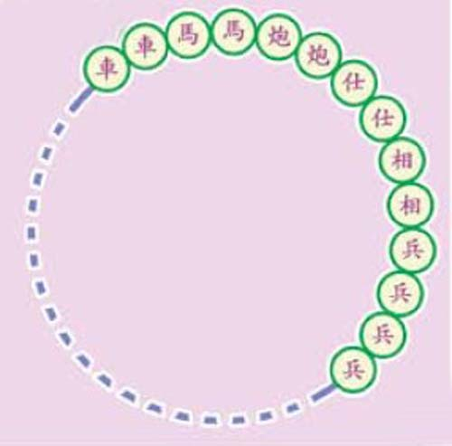
如图，把一些象棋子放成环形，且互相紧密接触。两人轮流从中取棋，每次只能取一枚或相邻的两枚，并且所取的这一枚或相邻两枚棋子的两边，必须都有与它们相接触的棋子，这样继续下去，到不能取走时为止。这时，最后一次取得象棋的人就算是赢了。想一想，如何取才能获胜？
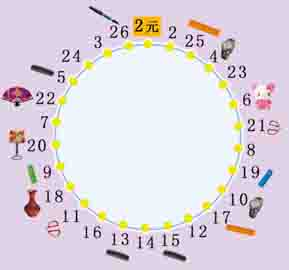
在公园或路旁，经常看到这样的游戏：摊贩前画有一个圆圈，周围摆满了奖品，有钟表、玩具、小梳子等等，然后，摊贩拿出一副扑克让游客随意摸出两张，并说好向哪个方向转，将两张扑克的数字相加（J、Q、K分别为11、12、13、A为1），得到几就从几开始按照预先说好的方向转几步（包含起点），转到数字几，数字几前的奖品就归游客，唯有转到一个位置（如下图），必须交2元钱，其余的位置都不需要交钱。
真是太便宜了，不用花钱就可以玩游戏，而且得奖品的可能性“非常大”，交2元钱的可能性“非常小”。然而，事实并非如此，通过观察可以看到，凡参与游戏的游客不是转到2元钱就是转到微不足道的一些小物品旁，而钟表、玩具等贵重物品就没有一个游客转到过。这是怎么回事呢？是不是其中有“诈”？
这是一道来自意大利的古老的数学题，是以果园为题材的。一个人进果园采苹果，果园有七道门：出第一道门时，他给了看门人自己所采苹果的一半加一个苹果；出第二道门时，又给了看门人自己身边所有苹果的一半加一个苹果；以后的五道门也都照此办理。离开果园时，他只剩下一个苹果。
他在果园里一共采了多少个苹果？
煤气炉上有两个炉头，现在准备用两个煎锅煎三块牛排，但是一个煎锅上只允许煎一块牛排。如果煎一面要5分钟，两面都煎要花10分钟，最短需要多长时间，能把两块牛排的两面都煎好？
狐狸和黄鼠狼进行跳跃比赛。狐狸每次跳四又二分之一米，黄鼠狼每次跳二又四分之三米。它们每秒钟都只跳一次。比赛途中，从起点开始，每隔十二又八分之三米设有一个陷阱。它们同时起跳，当它们之中有一个掉进陷阱时，另一个跳了多少米？
三位客人急着想住宿，找到一家酒店住下了，收费标准是：单间，三张单人床，一晚共计300元人民币。第二天，三位客人每人交100元后退了房。那天正好是酒店店庆，老板决定收他们250元，于是把50元钱叫秘书还给他们三人。秘书觉得50元平均给三人不好分，于是只还给他们30元（即每人10元），另20元放进自己的腰包了。问题：三位客人每人拿出90元，一共是3×90=270元，加上秘书的20元，共290元，那么还有10元去哪里了？
有长度分别为1厘米、2厘米、3厘米、4厘米、5厘米、6厘米、7厘米、8厘米的木棍各一根，从中选出若干根组成正方形，共有多少种不同选法呢？
有两个朋友从市中心起点站坐公交车到终点站办事。“我发觉每隔10分钟有一辆开回来的公交车和我们相遇。”甲对乙说，“你说如果两面开的公交车速度一样，那一小时有多少辆公交车开到市中心？”“那还用说，60÷10＝6辆。”乙说。甲摇摇头表示反对，你能猜出甲摇头的原因吗？
我们大家一起来试营一家有80间套房的旅馆，看看知识如何转化为财富。
经调查得知，若我们把每日租金定价为160元，则可客满；而租金每涨20元，就会失去3位客人。每间住了人的客房每日所需服务、维修等项支出共计40元。
问题是，我们该如何定价才能赚最多的钱？
桌子上放着同样大小的两个瓶子，一瓶装着白酒，一瓶装着水，两个瓶子里的液体一样多。如果用小勺从第一个瓶子中取出一勺白酒，倒入第二个瓶子中，搅匀后，再从第二个瓶子中取一勺混合液，倒回第一个瓶子中。那么这时是白酒中的水多呢，还是水中的白酒多呢？
在一座古老的小岛上，有很多有意思的古朴的习俗，比如说有一种掰花瓣的游戏，就是两个人拿着一朵有十三片花瓣的花朵，然后轮流摘花瓣，一个人可以摘去一片或者相邻的两片，谁摘去最后的花瓣谁就是赢家，他在这一天中将会有好的运气。有一个来旅游的数学家发现，只要按照某一种方式，就可以在这个游戏中必胜无疑，那么，这个获胜的人是先摘的人还是后摘的人？他用什么方法呢？
小明早上起床发现闹钟停了，他把闹钟调到7：10后，就去图书馆看书。当他到那里时，看到墙上的挂钟是8：50，在那看了一个半小时书后，又用同样的时间回到家，这时家里闹钟显示为11：50。请问小明此时究竟该把时间调到几点才能使其准时呢？
有一个男子临死前对他已怀有身孕的妻子这样说：“亲爱的，我死后如果你生下的是儿子，就给他遗产的三分之二，其余的留给你；如果是女儿，则给她遗产的三分之一，余下的是你的。”可是碰巧他的妻子生了一对龙凤胎（一男一女），请问为避免日后争执，男子的遗产该怎么来分配呢？
从前，有个老农养了十七头牛。他临终时，把三个儿子叫到跟前，留下遗嘱：长子分二分之一，次子分三分之一，幼子分九分之一，但不能把牛杀掉。说完就死了。这可难坏了兄弟三人。正在发愁之际，有个邻居牧牛归来，一听老农遗嘱，便帮他们把牛分好了。兄弟三人皆大欢喜。请你猜猜，这位邻居用的是什么办法？
位数学家的墓碑上刻着这样一段话：“过路人，这是我一生的经历，有兴趣的可以算一算我的年龄：我的生命前七分之一是快乐的童年，过完童年，我花了四分之一的生命钻研学问。在这之后，我结了婚。婚后五年，我有了一个儿子，感到非常幸福。可惜我的孩子在世上的光阴只有我的一半。儿子死后，我在忧伤中度过了四年，也跟着结束了我的一生。”
根据墓碑上所刻的信息，你能计算出数学家的年龄吗？
有一群小朋友准备排队进场看篮球比赛，但其中一个小朋友临时离开，导致队伍不能排整齐了。现在的情况是，如果2人一排多1人，如果3人一排多2人，如果4人一排多3人，如果5人一排多4人，如果6人一排多5人，如果7人一排多6人，如果8人一排多7人，如果9人一排多8人，如果10人一排多9人。
你知道实际进场的最少有多少名小朋友吗？
吹风笛的民间艺人哈林有个儿子叫汤姆。一天，汤姆偷了一头猪，可是顽皮的小猪逃掉了。汤姆开始追猪时，他正站在小猪正南方250米的地方。人与猪同时奔跑，而且都以匀速前进。小猪一路向东逃跑，可是汤姆却不取东北方向追赶，而是每时每刻都正对着小猪追赶。
假设汤姆的速度是小猪速度的倍，试问：他在抓住小猪之前，需要跑多少路？
一名医务人员说：“医院里的医务人员，包括我在内，总共是16名医生和护士。下面讲到的人员情况，无论是否把我计算在内，都不会有任何变化。在这些医务人员中：
（1）护士多于医生。
（2）男医生多于男护士。
（3）男护士多于女护士。
（4）至少有一位女医生。”
这位说话的人是什么性别和职务呢？（提示：确定一种不与题目中任何陈述相违背的关于男护士、女护士、男医生和女医生的人员分布情况）
有四个人借钱的数额分别是这样的：阿伊库向贝尔借了10美元；贝尔向查理借了20美元；查理向迪克借了30美元；迪克又向阿伊库借了40美元。碰巧四个人都在场，决定结个账，请问最少需要动用多少美金才可以将所有欠款一次付清？
杰克希望每星期能得到1美元的零用钱，他爸爸拒绝了。父子俩争论了一会儿后，杰克出了一个主意，他说：“爸爸，要不这样，5月1日你给我1美分，2日给我2美分，3日给我4美分。总之，每天的钱是前一天的2倍。”“给多长时间？”爸爸立即问道。“就这一个月。”“好。”爸爸答应了。
下列数目中，你能说出哪一个最接近爸爸在一个月里将要给杰克的零用钱总额吗？
1 10 100 1000 10000 100000 1000000 10000000
玛丽是一家银行的职员。一天，来了一个老人，他给玛丽200美元，并说：“帮我换成1美元的和2美元的，要求2美元的必须是1美元的10倍，其余的全部换成5美元的。”
如果你是玛丽，你会怎么办？
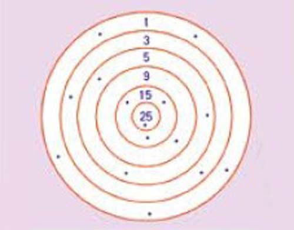
甲、乙、丙三人用汽枪射靶，每人射一发子弹，中靶的位置如图所示（图上黑点处），其中只有一发射中靶心（25分）。计算成绩时发现三人得分相同。甲说：“我有两发子弹共得18分。”乙说：“我有一发子弹只得3分。”
根据上述情况，你能判定出是谁射中了靶心吗？
甲、乙、丙、丁四个小组进行拔河比赛。当甲、乙两组为一方，丙、丁两组为另一方的时候，双方势均力敌，不相上下。但当甲组与丙组对调以后，甲、丁一方轻而易举地战胜了丙、乙一方。然而，分组较量时，甲、丙两组均负于乙组。你知道这四组中，哪一组的力气最大吗？
科学家发明了一个可以在简单程序操控下穿过马路（不是单行线）的机器人。
但是，由于科学家们犯了一个严重的错误，导致这个机器人前后共花了八个小时才穿过马路。请问，是哪里出错了？
某个学生参加军训，进行打靶训练，必须射击10次。在第6、第7、第8和第9次射击中，分别得了9.0环、8.4环、8.1环和9.3环，他前9次射击所得的平均环数高于前5次射击所得的平均数。如果他要使10次射击的平均环数超过8.8环，那么他在第10次射击中至少要得多少环？（每次射击所得的环数都精确到0.1环）
小学生运动会快要举行了，育才小学的代表队正在进行入场式队列，先是编成七路纵队，后排少了两人；接着改成五路纵队，又多出一个；最后改为三路纵队，末尾刚好齐平。
请你计算出育才小学的代表队至少有多少人？（提示：这种问题，在我国古代叫做“物不知数”，传说韩信曾用这方法点兵）
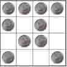
几位好朋友闲来无事在玩硬币游戏。他们面前有一个4×4的格子。几人在里面放十枚硬币（每一小格放一枚），使它们形成十行，且每行所放的硬币是偶数。（注意：计算行数时，横排、直排和斜排都算）
现在要求将右图中的硬币重新安排，以形成十六个偶数行，你会排吗？请试试看。
有一位农民伯伯用一块长20米的篱笆围成一个长方形用来种菜，其中一面利用墙面。为了使围成的菜地面积最大，请你帮他算算，究竟菜地可以达到的最大面积是多少？
如图，一个菱形鱼池的四个角上都栽有两棵椰树。如何不移栽椰树，使鱼池的面积扩大一倍？
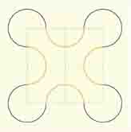
如图所示的花朵图案，有四个花瓣，是由八条圆弧连接成的，每条弧的半径都是1厘米，圆心分别组成一个正方形的顶点和各边的中点。这个花朵图案的面积是多少平方厘米？
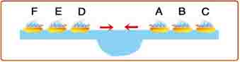
汽船A、B、C沿着一条河道先后航行，同时，汽船D、E、F也先后沿着同一条河道迎面而来。可是，由于河道的宽度太窄，两艘船无法擦身而过，不过河道的一侧有一个恰好容纳一艘船的河湾，请问，通过怎样的安排，这六艘船才能继续航行呢？
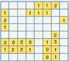
这是一个挖地雷的游戏。在64个方格中一共有10个地雷，每个方格至多有一个地雷。对于写数字的方格，其格中无地雷，但与其相邻的八格中可能有地雷，地雷的个数与该数字相等。请你用画圈的方法表示出哪些方格中有地雷。
有三根原料、粗细、长短相同的绳子，若每根绳子从两端同时点燃，一小时可以烧完，你能将绳子同时点燃，并判断出1小时45分是何时刻吗？（提示：可以点燃一端，但不能中途熄灭或者再次点燃）
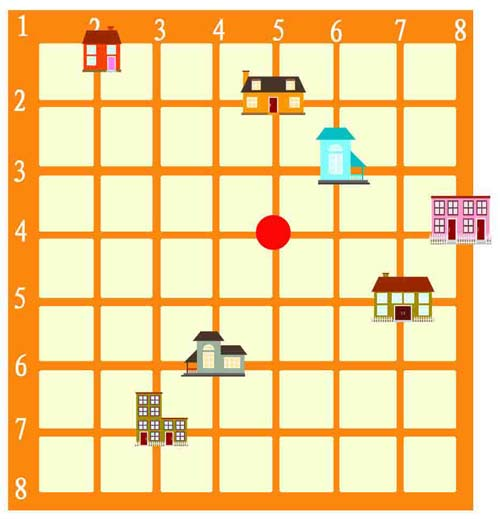
在靠近西班牙边境的杰克加维的东部，有一个城镇，镇上的道路都是以方格的形式排列着（这种道路系统最先由古希腊人所采用）。格林特与他的六位朋友分别住在镇上不同的房间里，如图所示。这天，他们想聚在一起喝杯咖啡。那么，他们应该选择在哪一个地点上聚会，才能使七个人的步行距离都最短呢？
公园有一块空地，园艺工人准备在里面栽上九株白玉兰。根据空地条件和为了美化环境，要栽成每条直线上有三株树，保证有十条直线，即九株树栽十行，每行三株。怎样栽才满足要求？试着画一画！
1991年1月，美国人塞望女士在某杂志上刊登了这样一则趣题，当时曾引来从小学生到大学教授的上万封的来信讨论。题目是这样的：主持人指着三扇关闭的门，说：“其中两扇门里是空的，有一扇门里有一辆车，请你选一扇门，如果选中了有车的那一扇，就可以开走这辆车。”
约翰做出了选择，主持人同时继续追问：“那你是否愿意重选另一扇未被打开的门呢？”
究竟哪一种获奖的概率更大？请你帮约翰出出主意吧。
卡塔尼亚和多格尼亚两个公国之间的战争一直持续了数百年，战乱使得两国的百姓都怨声载道。为了使两国人民和平相处，经过协商，两国国王共同签署了一项法令，明确规定所有来往于两国之间的商船上，都必须同时有来自两国的船员，而且其人数必须相等。在某个具有历史意义的日子里，这样的船终于开始通航了。
这艘商船上共有船员30人，包括：15个卡塔尼亚人和15个多格尼亚人，船长则是强壮而冷酷无情的多格尼亚人。出航没多久，船就遇上了风暴，受到严重的损坏。船长表示，唯一能救这艘船的办法，就是把一半的船员扔下海，以便减轻船的负荷。为了公平起见，他决定让船员们抽签决定由谁来赴海蹈死：所有人都站成一排，由船长读数，每数到第九的船员就会被扔下水。大家都同意了这个办法。
奇怪的是，因这种办法而被扔下水的船员，全是卡塔尼亚人，没有一个多格尼亚人。这肯定是船长在排队时耍了诡计，但你知道他是怎么将船员进行排列的吗？
在酒吧里，老板拿来一斤酒、一个刚好能装下一斤酒的容器（长方体）以及三个容量大于五两的酒杯。老板对顾客们说：“谁能将这一斤酒平均分成三份，倒入旁边的三个酒杯中，我就请他喝这酒。当然了，只能用这个长方体容器。”
亲爱的读者，请帮帮那里的顾客来平均分这三杯酒吧！
若10个人要站成5排，每排要有4个人，应该怎么站呢？
五个海盗抢到了100颗宝石，每一颗都一样的大小和价值连城。他们决定这么分：
一、抽签决定自己的号码（1，2，3，4，5）。
二、首先，由1号提出分配方案，然后大家进行表决，当且仅当半数和超过半数的人同意时，按照他的提案进行分配，否则将被扔入大海喂鲨鱼。
三、如果1号死后，再由2号提出分配方案，然后其他四人进行表决，当且仅当半数和超过半数的人同意时，按照他的提案进行分配，否则将被扔入大海喂鲨鱼。
四、依此类推……
你知道谁最后分到的最多吗？（提示：每个海盗都是很聪明的人，都能很理智地判断得失，从而做出选择）
在一个盛满水的鱼缸里，将小木块、小石块或者橡皮等物品放进去，水就会从鱼缸里溢出来。但是，为什么把一条与上述物品同样体积的小金鱼放进去，水却不会溢出来呢？
已知每一层楼楼高相同，那么，假如从一楼走到四楼需要花4分钟，那么以同样的速度，需要多少时间才能从一楼走到八楼？
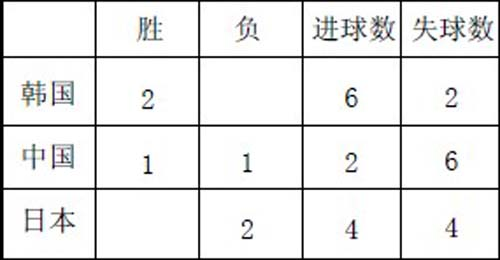
在一次比赛中，中国、韩国、日本三支足球队，两两对阵，一共比赛了三场球，均没有平局出现。每个队的比赛结果及进、失球如下表。根据这张表，请你判断出三场球赛的具体比分。
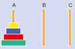
古印度有个传说：神庙里有三根金刚石棒，第一根上面套着六十四个圆金片，自下而上从大到小摆放。有人预言，如果把第一根石棒上的金片全部搬到第三根上，世界末日就来了（搬动时可借用中间的一根棒，但每次只能搬动一个金片，且大的不能放在小的之上）。为了不让世界末日到来，神庙众高僧日夜守护，不让其他人靠近。这时候，一个数学家路过此地，看到这样的情景，不禁哈哈大笑。他为什么笑呢？
为了说明问题，我们可以做一个简单的图示：假定第一根石棒上有4个圆金片，自下而上从大到小摆放。如果借用中间的一根石棒，每次只能搬动一个金片，且大的不能放在小的上，需要多少次能把第一根石棒上的金片全部搬到第三根上？你最好动手试验一下，然后总结出计算规律，这样，你就明白古印度的数学家为何要发笑了
一个大名鼎鼎的老学者，居住的小屋旁边有一个池塘，他因此想到一个奇怪的问题：这个池塘里共有几桶水？这个问题问得稀奇古怪，问一个池塘里有几桶水就像问一座山有多少斤一样，谁答得准确？学者的弟子都是出了名的年轻学者，但没有一个能答得上来。老学者很不高兴，便说：“你们回去考虑三天。”
三天过去了，弟子中仍无人能解答出这个问题。老学者觉得很扫兴，干脆写了一张布告，声明谁能回答这个问题，就收谁做弟子—免得有人说他的弟子都是一帮庸才。
布告贴出后，一个女孩子大大咧咧地走进老学者的授课大厅，说她知道这池塘有几桶水。弟子们一听，觉得好笑，小孩子懂什么。老学者将那问题讲了一遍后，便示意一名弟子领女孩子到池塘边去看一下。不料，女孩子笑道：“不用去看了，这个问题太容易了。”她眨了几下眼睛，凑到老学者耳边说了几句话。
老学者听得连连点头，露出赞许的笑容。
你能说得出有几桶水吗？
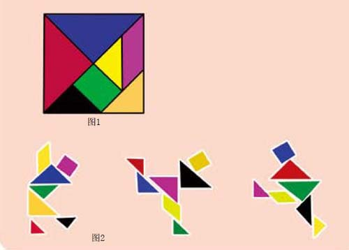
七巧板又叫做“七巧图”、“智慧板”，是中国民间流传的一种拼图游戏，起源于宋代，后来传到欧、美、日本等许多国家。
找一张硬纸片，按照图1的尺寸比例画在硬纸上，然后沿着画的线剪开，得到七块小板，就做成一副七巧板了。图的尺寸比例很容易掌握，只要先画一个正方形边框，然后反复取中点、连结线段，就能画出整个图来。
用一副七巧板可以拼出许许多多各种各样的图形，包括人物、动物、植物、生活用品、建筑、汉字、数字和西文字母等，有记载的图形数目已经超过1000种。通常是在拼成图形以后，把外围轮廓描下来，里面全部涂黑，看不出拼接的痕迹，让别人去重新尝试用七巧板拼成这样的图形。所以玩七巧板也像猜谜语一样，需要善于分析，头脑灵活，是一种益智游戏。现在有两个关于七巧板的小小计算问题。
（1）如果一副七巧板的总面积是16，那么其中每一块的面积各是多少？
（2）仔细观察图2中的七巧板人物造型。图中的三个人，一个在踢球，一个在溜冰，还有一个在跳藏族舞蹈，各有各的乐趣。这三个七巧板人物的头部面积与全身面积的比各是多少？
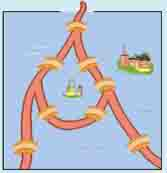
某国的边防线上有一条小河，河的分岔处形成一个岛，岛上有一个哨所。在河的一边是边防军的指挥部。河上分布着八座桥梁，每天早晨，都有一队哨兵从指挥部出发，先对这八座桥梁进行巡察后，到达哨所，与守卫哨所的士兵换防；换防下来的士兵，沿着哨兵的巡察路线逆向返回，再对这八座桥梁巡察一次，然后到达指挥部。换防的双方，每次巡察只经过每座桥一次。你能画出巡察路线吗？
传说，古时候有一个国王。他有五个儿子。国王年老临终时，立下了一份遗嘱。规定：他死后，他的五个儿子可以将国土划成五块。但是，分成的五块国土必须是每一块与其他四块都有一条共同的边界线，使得居住在任何一块国土上的人，不必经过第三者的国土，就可以直接到达其他任何一块国土上去。至于五块国土的形状和大小嘛，老国王在遗嘱中却说他没有什么具体的意见，可由他们五人自己协商解决。
不久，老国王就离开了人世。然而，老国王留下的遗嘱却使得他的五个儿子伤透了脑筋。他们整天凑在一起，不停地在地图上划划涂涂，你一言，我一语……
哈，少年朋友们，你知道老国王的五个儿子能不能按照他们父亲的遗嘱，将国土划成五块吗？
魔方
魔方又称鲁比克方块，是匈牙利建筑学教授鲁比克在1974年发明的。
最常见的魔方核心是一个轴，并由二十六个小正方体组成。魔方玩具在出售时，小正方体的排列使大立方体的每一面都具有相同的颜色。当大立方体的某一面平动旋转时，其相邻的各面单一颜色便被破坏，而组成新图案立方体，再转再变化，形成每一面都由不同颜色的小方块拼成。魔方在20世纪八十年代最为风靡，至今未衰。
哥德巴赫猜想
二百多年前，德国数学家哥德巴赫发现，任一大于2的偶数，都可以写成两个质数的和，例如：6=3+3，100=3+97，1000=3+997……但他始终未能从理论上对此予以证明。人们把哥德巴赫提出的这个问题称为“哥德巴赫猜想”。
从此，哥德巴赫猜想成了一道世界有名的数学难题，在此后的很多年里，许多数学家都试图对这个猜想作出证明，但成功者寥寥。1973年，我国数学家陈景润在对“哥德巴赫猜想”的研究上取得突破性进展，居于世界领先地位，他发表的成果被称为“陈氏定理”。
巧 合
亚里士多德说，不可能的事往往极其可能。但看看我们周围各种奇怪的巧合吧，我们容易得出结论：很多巧合根本不能用我们所知的规则去解释。
诡异心理学家路易斯•伏恩在《怀疑论者》杂志中用下面这则故事警告预测事件同时发生的危险性。
一个人在家排行老七，他的父母也都排行老七。他在一周的第七天—安息日出生，那是在1907年的第七个月。他经历了一系列奇怪的事情，每件事都和数字“七”有关，于是他把“七”作为他的幸运数字。在他27岁生日那天，他走进赛马场，见到一匹叫做“七号天堂”的马将在第七场的第七赛道比赛，夺冠赔率是七赔一。他立即把能弄到的钱都押在这匹马上。结果这匹马顺理成章地跑了第七名。
和那个人一样，我们如果仅仅主观地看待概率，那往往会导致错误的结果。为了能做出正确判断，我们应该学习偶然性中的规律，那些结果经常和你的直觉相背。